12 Best Indonesian Cuisine
The variety of Indonesian foods is as diverse as its cultures. Each and every area of Indonesia has its own specialty foods that you cannot find in anywhere else. Some are seasonal menus that only appear during certain times of the year.
Regardless of the diversity of Indonesian culinary, there are some familiar foods that interestingly, many Indonesians cannot live without. Some of these foods are in the must-bring list whenever they go or live abroad for a while.
Indonesian food really deserves some time in the limelight, and this post is dedicated to the foods all-time favorites. Oh, these foods are also must-try for anyone who has just landed in Indonesia!
Sambal
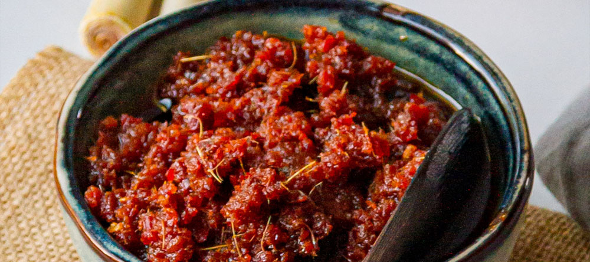Who doesn’t know Sambal? While this is technically more of a condiment, the chili sauce is a staple at all Indonesian table. Dishes are incomplete without a spoonful of the sauce made of fresh chili, shrimp paste, tomatoes, and sometimes fresh lime juice or young mango flesh.
Nowadays you don’t need to crush all of those ingredients with mortar to get the sizzling hot Sambal—there are many ready-to-eat packed Sambals that you can buy at the supermarket. These sambals are packaged in a tight-lidded jar, so you can bring them anywhere or even as souvenirs.
Indomie
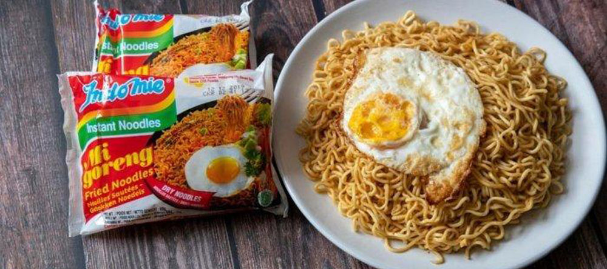Indomie is an Indonesian instant noodle brand. The instant noodle product comes in dozens of flavors, but there is one particular product that everybody just loves: Indomie Goreng or the fried noodle. It tastes so good that even the aroma can wake you up in the morning.
Believe it or not, Indonesians who usually bring at least ten packs of Indomie Goreng when they are going abroad. Trivia about Indomie: a restaurant in Australia even offers Indomie Burger as their signature dish.
Soto
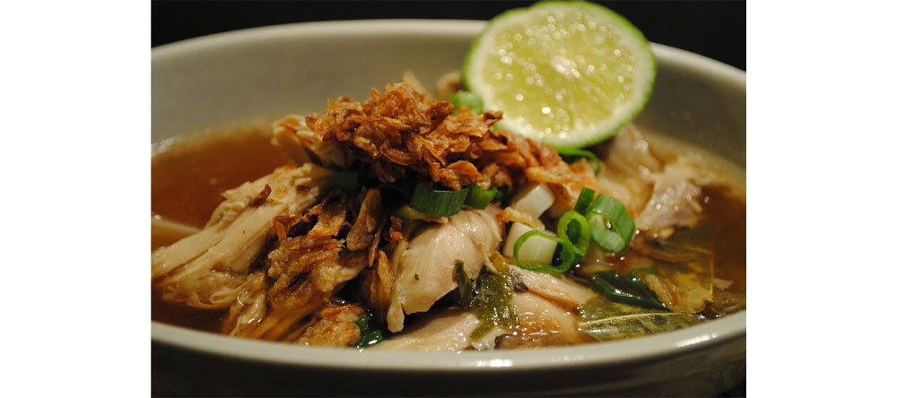Soto is a type of Indonesian soup that comprises of broth and ingredients that vary across the archipelago. Common type of Soto that you can find on the streets is Soto Lamongan, a Javanese Soto made of clear yellow soup flavored with chicken, eggs, cabbage, and vermicelli.
There so many types of Soto in Indonesia, including the “heavier” varieties like Soto Betawi or Coto Makassar, which broth is made of coconut milk.
Sate
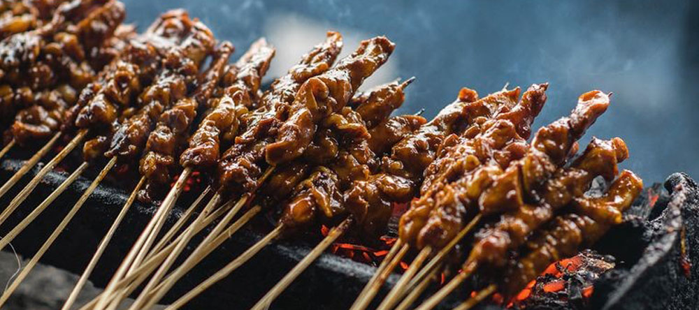Sate or Satay refers to meat skewers cook up over coals, and topped with creamy peanut sauce or sweet soy sauce. You can find this dish in literally anywhere in Indonesia.
Gado-Gado
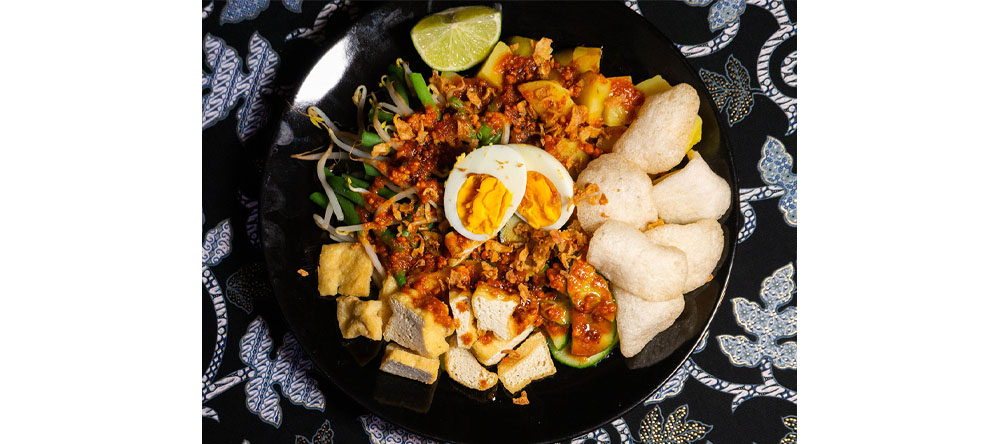This is one of Indonesia’s famous dishes, essentially a cooked vegetable salad. At its base are boiled long beans, spinach or water spinach, corn, carrot, bean sprout, cucumber, and sometimes with fried tofu and tempe. All is topped with the classic peanut sauce.
Bakso
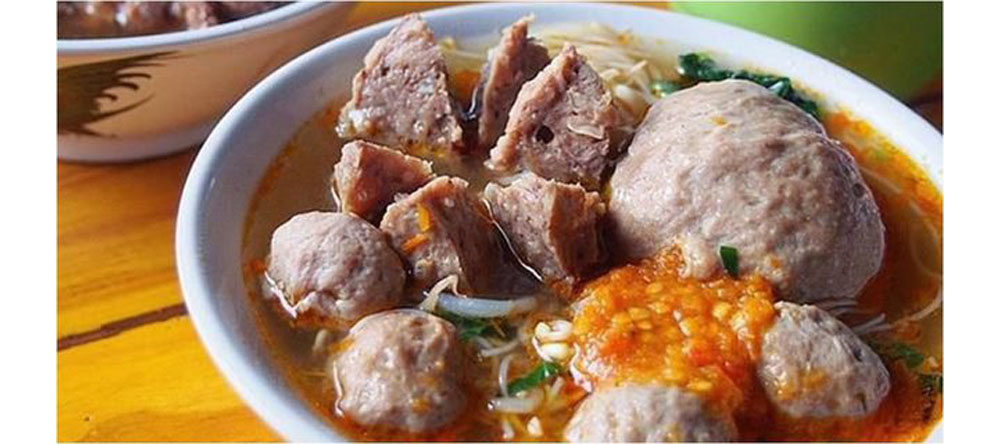Everyone loves Bakso. This meatball noodle soup gained international fame when Barrack Obama remembered it as one of his favorite during his stay in Jakarta.
The balls are usually made of beef, chicken, fish or shrimp and served with noodles, vermicelli, and savory soup. Don’t forget Sambal to add the heat.
Nasi Goreng
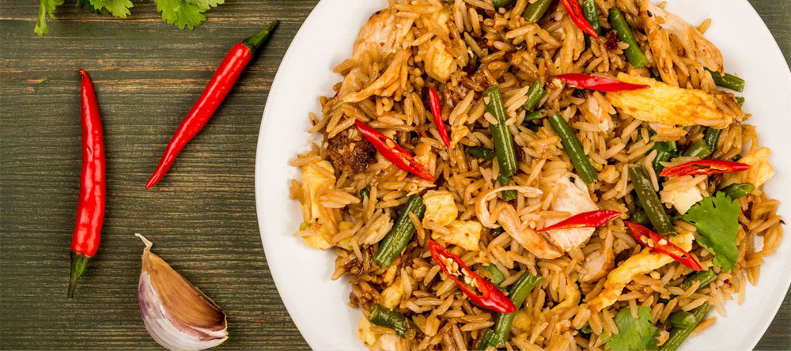Nasi Goreng is kind of like national dish to Indonesia. The Indonesian take of fried rice is often made with sweet, thick soy sauce (Kecap) and garnished with pickled cucumber, Kerupuk, and of course, Sambal.
Gorengan
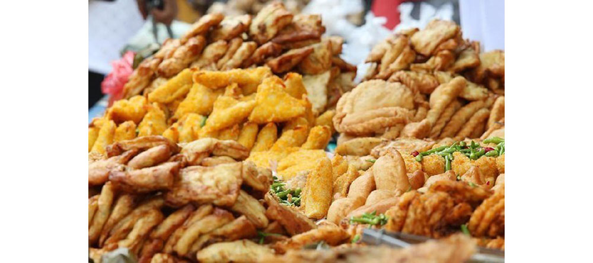Gorengan is considered as the ‘vitamins’ Indonesians need—that pretty much explains how much they love this snack. Gorengan is an assortment of snack fritters made of banana, tofu, tempe, sweet potatoes, or just fried flour dough with vegetables.
Once you bit a piece of it, it will be hard to stop.
Ayam Goreng
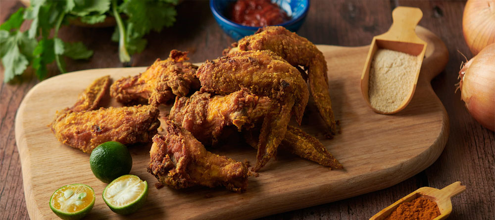Translated as fried chicken, Indonesian Ayam Goreng is nowhere similar with fried chickens from famous international restaurant chain. Ayam Goreng is seasoned with turmeric, basil leaves, coriander, garlic and onions, boiled until tender, and then fried until it’s golden brown.
The main attraction of Ayam Goreng is the Sambal that accompanies it. See, where else can you find fried chicken with sizzling hot Sambal, if not in Indonesia?
Sambal Goreng Kering
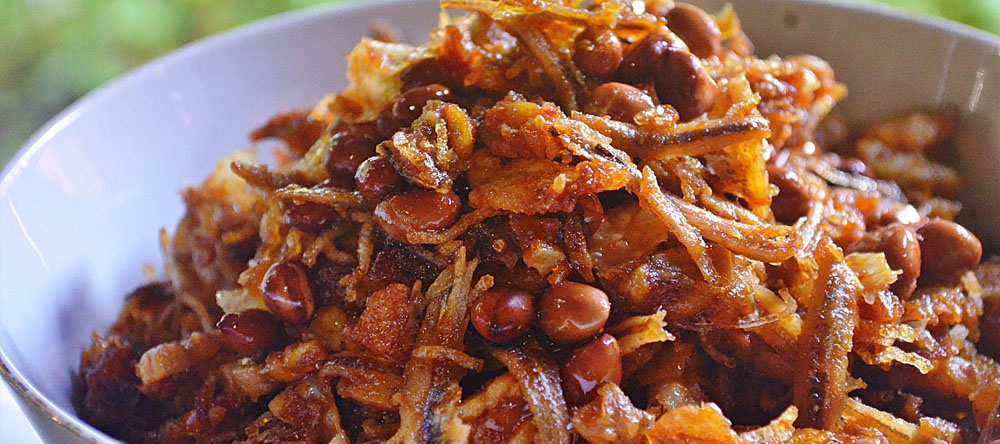Literally translated as Fried Sambal, Sambal Goreng Kering is not the fried version of the hot Sambal. It actually refers to spicy sautéed condiment made of potatoes, tempe, peanuts, or teri (anchovies), or combination of them all.
Sambal Goreng Kering can be stored in tight-lidded jar for up to one month, so it explains why many Indonesians bring Sambal Goreng Kering when they go abroad.
Martabak Manis
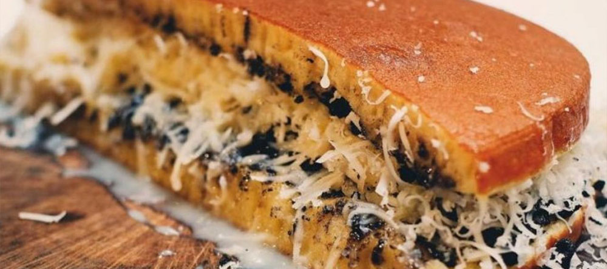The thick pancake is definitely everyone’s favorite. The huge pancake is topped with a load of butter and toppings like chocolate sprinkles, cheese, peanuts, and sweet condensed milk.
It’s heavenly delicious, but indulging yourself with too much Martabak Manis can cause unhealthy addiction!
Rendang
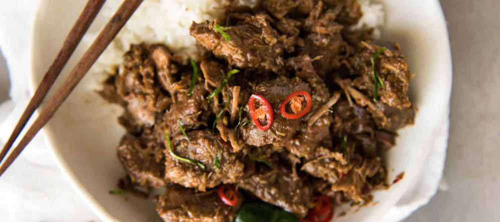Why is it voted as the world’s number one food by CNN? The Padang’s most famed curry is beef (or sometimes mutton) simmered for hours in coconut milk gravy and spicy seasoning until tender.
Rendang can be found in any Padang restaurants in Indonesia or souvenir stores in West Sumatera. There is also a dried version of Rendang that can be kept for months (like jerky).
Bonus: Kerupuk
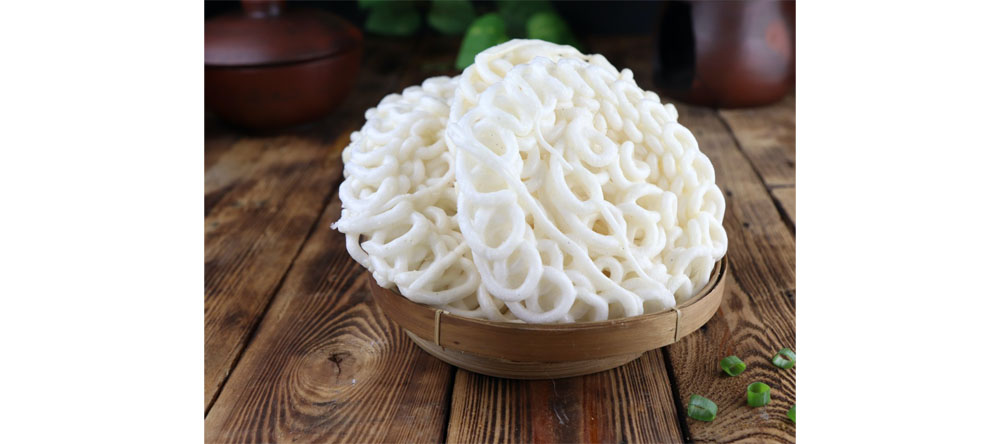Kerupuk or crackers are popular condiments for any Indonesian foods. It’s best to accompany soupy dishes like Soto or Bakso, but this crispy condiment literally goes well with any Indonesian foods. The only key is one: the more the merrier!